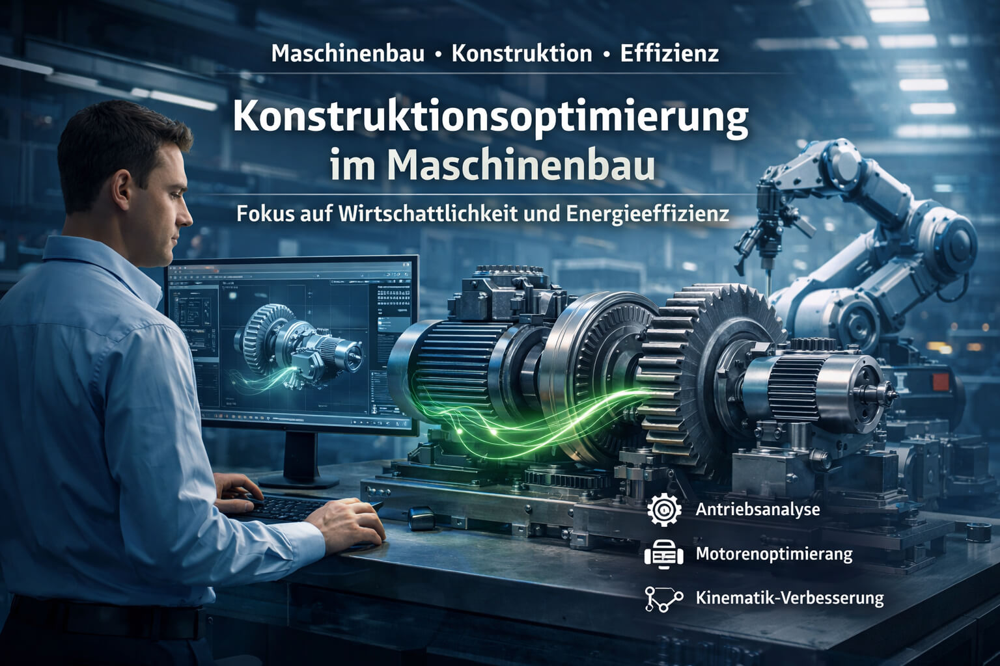

Analyse bestehender Konstruktionen
Systematische technische Bewertung vorhandener Maschinen und Baugruppen zur Identifikation relevanter Optimierungspotenziale in Bezug auf Funktion, Energiebedarf, Robustheit und Wirtschaftlichkeit.
Berechnung · Konstruktion · Effizienz
Ingenieurbüro Berkone unterstützt Maschinenbauer bei der technischen und wirtschaftlichen Weiterentwicklung bestehender Maschinen, Baugruppen und Antriebssysteme – unabhängig, fundiert und mit Fokus auf realisierbare Verbesserungen, oft ohne vollständige Neuentwicklung.

Warum Berkone
Neutrale Bewertung bestehender Lösungen ohne interne Betriebsblindheit und ohne Bindung an Hersteller, Komponenten oder Technologien.
Optimierung nicht als Selbstzweck, sondern mit Blick auf Energieverbrauch, Herstellkosten, Betriebskosten, Risiken und praktische Umsetzbarkeit.
Besonders wertvoll dort, wo Maschinen grundsätzlich funktionieren, aber nicht klar ist, ob Auslegung, Effizienz und Konstruktion bereits optimal sind.
Wann es sinnvoll ist
Typische Situationen aus der Praxis, in denen eine unabhängige technische Bewertung zusätzlichen Nutzen schafft – insbesondere bei bestehenden Maschinen und im laufenden Betrieb.
Wenn Maschinen mehr Energie verbrauchen als erwartet oder Antriebe möglicherweise überdimensioniert sind.
Wenn intern nicht klar ist, ob Konstruktion und Auslegung bereits technisch und wirtschaftlich optimal sind.
Wenn Verschleiß, Schwingungen oder Lastspitzen auftreten und die Ursachen nicht eindeutig sind.
Wenn Konstruktionen aufwendig, materialintensiv oder im Betrieb dauerhaft kostenintensiv sind.
Wenn Maschinen grundsätzlich funktionieren, aber technisch und wirtschaftlich verbessert werden sollen.
Wenn eine neutrale technische Bewertung zur Absicherung von Entscheidungen oder zur Identifikation von Potenzialen gewünscht ist.
Anwendungsfälle
Typische Fragestellungen aus realen Maschinenprojekten – von Energieverbrauch und Antriebsauslegung bis zu konstruktiver Optimierung, Belastungsbewertung und wirtschaftlich sinnvollem Redesign.
Eine kardanische Aufhängung des gesamten Spindelhubgetriebes ermöglicht eine kontrollierte Selbstanpassung von bis zu ±5° an reale Einbau- und Lastverhältnisse. Dies ist insbesondere dann vorteilhaft, wenn der Kraftvektor nicht parallel zur Achse des Hubgetriebes bzw. der Spindel verläuft. In der Praxis ist dies vor allem bei hohen Lasten und großen Baugrößen relevant, da fertigungs- und montagebedingte Toleranzen eine ideal parallele Ausrichtung von Führungen und Hubgetriebe oft nicht zulassen. Die Nullposition bleibt dabei erhalten – ein wesentlicher Vorteil bei Anlagen mit mehreren synchronisierten Hubgetrieben. Gleichzeitig werden Verspannungen reduziert und die Lebensdauer des Gesamtsystems erhöht.

Die Wahl des geeigneten Bewegungsprofils hat direkten Einfluss auf Beschleunigung, Lastspitzen, Drehmomentbedarf und Energieverbrauch eines Antriebssystems. Je nach Kombination von Start- und Endbedingungen stehen unterschiedliche Bewegungsprofile zur Verfügung, die den Bewegungsablauf und die Belastung des Motors wesentlich beeinflussen. Durch die gezielte Auswahl eines technisch passenden Profils lassen sich Motoren bedarfsgerechter auslegen, Wirkungsgrade verbessern und unnötige Sicherheitszuschläge vermeiden. So wird der Antrieb nicht nur effizienter, sondern auch wirtschaftlich sinnvoll dimensioniert.
Bildhinweis: Die Abbildung zeigt die Tabelle „Verfügbare Bewegungsprofile“ aus dem Auslegungstool MotionSizer von Schneider Electric.

Ein effizientes und platzsparendes Design entsteht, wenn die Konstruktion konsequent auf die konkrete Aufgabe und die realen Lasten abgestimmt wird. Die FEM-Prüfung wesentlicher Bauteile hilft, Überdimensionierungen zu vermeiden, Material gezielt einzusparen und die Kosten der Gesamtmaschine zu reduzieren. So entstehen belastungsgerechte Konstruktionen, die weniger Bauraum benötigen, wirtschaftlicher gefertigt werden können und die Funktion technisch zuverlässig erfüllen.
Bildhinweis: Abgebildet ist ein 3D-Modell eines Maschinenentwurfs, ähnlich der UW23 der MBO Postpress Solutions GmbH

Gerade im Produktentstehungsprozess (PEP) und bei kundenspezifischen Entwicklungsprojekten im Engineer-to-Order-(ETO-)Umfeld sind Konstruktionsprojekte durch viele Abhängigkeiten, Iterationen und Schnittstellen geprägt. Ein Planungswerkzeug wie gleisen.com hilft, Aufgaben, Termine und Verantwortlichkeiten transparent zu strukturieren und die Zusammenarbeit der Konstruktion mit Einkauf, Arbeitsvorbereitung und Montage gezielt zu verbessern. So lassen sich Abstimmungen vereinfachen, Schnittstellen klarer steuern und Projekte effizienter umsetzen.
Bildhinweis: Abgebildet ist das Dashboard von gleisen.com.

Leistungen
Systematische technische Bewertung vorhandener Maschinen und Baugruppen zur Identifikation relevanter Optimierungspotenziale in Bezug auf Funktion, Energiebedarf, Robustheit und Wirtschaftlichkeit.
Prüfung und bedarfsgerechte Auslegung von Motoren, Getrieben und Antriebssystemen unter Berücksichtigung von Lastprofilen, Dynamik, Sicherheitsfaktoren und Gesamtwirkungsgrad.
Analyse konstruktiver und antriebstechnischer Einflussgrößen auf den Energiebedarf mit dem Ziel, unnötige Verluste zu reduzieren und wirtschaftlich tragfähige Verbesserungen abzuleiten.
Bewertung von Bewegungsabläufen, Beschleunigungen und bewegten Massen zur Verbesserung von Zyklusverhalten, Bauteilschonung und energetischer Effizienz.
Technische Berechnungen zur Beurteilung von Steifigkeit, Spannung, Überdimensionierung, Lebensdauer und funktionaler Sicherheit mechanischer Komponenten.
Technische Überarbeitung bestehender Maschinen und Baugruppen zur Reduktion von Gewicht, Materialeinsatz, Teileanzahl, Fertigungsaufwand, Montagekomplexität und Betriebskosten.
Vorgehen
Erfassung der bestehenden Konstruktion, der technischen Randbedingungen, der Zielsetzung und möglicher Auffälligkeiten im Betrieb oder in der Wirtschaftlichkeit.
Prüfung von Antrieben, Kinematik, Wirkungsgrad, Bauteilen, Lastfällen und konstruktiven Zusammenhängen auf relevante technische und wirtschaftliche Optimierungspotenziale.
Erarbeitung nachvollziehbarer Verbesserungsvorschläge mit technischer Begründung und Einordnung hinsichtlich Nutzen, Aufwand und möglichem wirtschaftlichem Effekt.
Auf Wunsch Unterstützung bei Detaillierung, Abstimmung mit internen Teams, Lieferanten oder Umsetzungspartnern sowie bei der weiteren technischen Konkretisierung.
Externer Blick
Auch sehr gute interne Entwicklungsteams arbeiten unter Termin- und Projektdruck, innerhalb gewachsener Produktlogiken und mit hoher Nähe zur eigenen Lösung.
Genau hier schafft ein externer technischer Blick zusätzlichen Nutzen – durch Neutralität, Erfahrung aus unterschiedlichen Anwendungen und eine klare Fokussierung auf Optimierung und Wirtschaftlichkeit.
Berkone ersetzt keine interne Konstruktion, sondern ergänzt sie als technischer Sparringspartner – gezielt dort, wo zusätzliche Perspektive und unabhängige Bewertung entscheidend sind.
„Ein externer Blick ist besonders dann wertvoll, wenn eine Maschine grundsätzlich funktioniert – aber offen ist, ob sie technisch und wirtschaftlich bereits optimal ausgelegt ist.“
Ingenieurbüro BerkoneProfil
Berkone Engineering wird von Yevgen Yeshchenko, Maschinenbauingenieur (M.Sc.), geführt. Er bringt mehr als 20 Jahre Erfahrung in Konstruktion und Entwicklung mit – davon über 15 Jahre im Sondermaschinenbau sowie in der Entwicklung komplexer Maschinen- und Antriebssysteme.
Die berufliche Praxis umfasst die Entwicklung und Optimierung von Maschinen und Baugruppen in unterschiedlichen industriellen Anwendungen, unter anderem im Sondermaschinenbau, in der Verpackungsindustrie sowie im Bereich Antriebstechnik und automatisierter Produktionsanlagen.
Zu den fachlichen Schwerpunkten zählen die Auslegung und Optimierung von Antriebssystemen, technische Berechnungen wie FEM, Lebensdauer- und Dimensionierungsanalysen sowie die systematische Analyse bestehender Konstruktionen im Hinblick auf Funktion, Effizienz, Robustheit und Kosten.
Die Erfahrung aus Entwicklung, technischer Leitung sowie der Zusammenarbeit mit Produktion und Montage ermöglicht eine praxisnahe Bewertung technischer Lösungen – nicht nur aus Sicht der Konstruktion, sondern auch mit Blick auf Umsetzbarkeit, Betrieb und Wirtschaftlichkeit.
Der Anspruch von Berkone ist es, Optimierungspotenziale dort sichtbar zu machen, wo sie technisch belastbar, wirtschaftlich sinnvoll und in realen Maschinenanwendungen tatsächlich nutzbar sind.
„Mein Fokus liegt auf bestehenden Maschinen und Konstruktionen: dort, wo ein unabhängiger technischer Blick hilft, reale Optimierungspotenziale sichtbar zu machen und wirtschaftlich sinnvoll nutzbar zu machen.“
Yevgen Yeshchenko
Erste Einschätzung
Oft genügen erste Unterlagen, Zeichnungen oder eine kurze Beschreibung der Aufgabenstellung, um Potenziale und sinnvolle nächste Schritte fundiert einzuordnen.